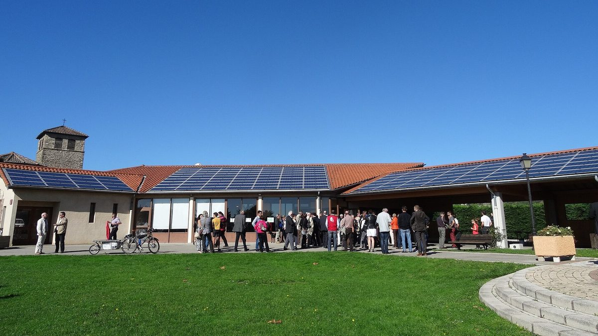

프랑스 협동조합 은행 라네프·전력협동조합 에네르쿠프, 재생에너지 예금통장 내놔…10유로부터, 이자 최대 100% 에너지 빈곤 단체에 기부

예금은 라네프 전체 대출 재원으로 들어가 지역에 뿌리내린 시민 운영 사업을 우선 지원…라네프 2025년 재생에너지 72개 사업에 3,900만 유로 대출
프랑스 협동조합 은행 라네프(La Nef)가 시민 재생에너지 전력 공급 협동조합 에네르쿠프(Enercoop)와 함께 만든 예금 상품 '리브레 네프 x 에네르쿠프(Livret Nef x Enercoop)'를 새로 내놨다. 성인이면 누구나 10유로부터 가입할 수 있고 예금 한도와 관리 수수료가 없으며 언제든 돈을 찾을 수 있으며 1인당 10만 유로까지 예금자 보호를 받고, 라네프 누리집에 따르면 금리는 1만5,000유로까지 연 0.50%, 넘는 부분은 연 0.10%이며 이자에는 31.4% 일괄 세율이 붙는다. 모인 돈은 라네프가 환경·사회 기준으로 고른 지붕·농업 건물 태양광, 바이오가스, 열망, 풍력, 소수력, 건물 에너지 개량 사업에 빌려주는 재원이 되며 지자체·지역 협동조합·주민 모임처럼 지역에 뿌리내리고 시민이 운영하는 사업이 우선이지만, 라네프는 예금이 특정 사업에 바로 배정되지 않고 은행 전체 대출 여력에 보태진다고 밝혔다. 가입자는 이자의 25%·50%·75%·100% 가운데 하나를 골라 주거 에너지 빈곤 단체 '에네르지 솔리데르(Énergie Solidaire)'에 기부할 수 있고, 라네프는 첫해 1만5,000유로 구간에서 생긴 이자의 50%만큼을 따로 보탠다. 라네프는 2025년 재생에너지 72개 사업에 3,900만 유로를 빌려줬고 지역 에네르쿠프 협동조합 4곳에 250만 유로, 협력 발전사업자 21곳에 500만 유로를 댔으며 대출 목록을 해마다 공개한다고 밝혔다. 1988년 세워진 라네프는 2005년 에네르쿠프 설립에 참여해 운영에도 함께하고 있으며, 에네르쿠프에 따르면 이 협동조합 망은 협동조합 13곳, 고객 11만3,000명, 조합원 6만7,000명, 협력 발전사업자 500곳 넘게로 이뤄져 있다.
시민에너지 관점
10유로짜리 통장이 한 해 72개 재생에너지 사업, 3,900만 유로 대출로 이어지는 통로가 된다는 것은 시민 돈이 지역 에너지로 흘러가는 길이 출자 하나만은 아니라는 점을 보여 준다. 예금은 발전소 지분이 아니고 특정 사업에 바로 가지도 않는다는 지적이 나올 수 있지만, 원금이 보호되는 낮은 문턱에서 시작해 대출 목록을 해마다 공개하고 이자 일부를 에너지 빈곤 가구와 나누는 설계는 시민이 돈의 쓰임을 확인하고 이익을 지역에 돌리는 첫 계단이 된다. 마을 발전소가 외부 자본에 지분을 넘기지 않고 지역 주인으로 남으려면 시민 운영 사업을 먼저 보는 금융이 곁에 있어야 하고, 그 금융의 재원이 다시 지역 예금이라면 소유와 자금이 함께 지역에 머문다. 국내 상호금융과 사회적 금융도 지역 에너지 협동조합과 손잡고 예금을 시민 발전 사업 대출로 잇는 상품과 대출 내역 공개부터 시작해야 한다.
출처: RSE Magazine 2026-10-29 Anton Kunin 원문 보기
フランスの協同組合銀行ラ・ネフと電力協同組合エネルコープ、再エネ預金口座を発売…10ユーロから、利息の最大100％をエネルギー貧困支援団体に寄付
預金はラ・ネフ全体の融資原資となり、地域に根ざし市民が運営する事業を優先支援…ラ・ネフは2025年に再エネ72事業へ3,900万ユーロを融資
フランスの協同組合銀行ラ・ネフ（La Nef）が、市民による再生可能エネルギー電力の供給協同組合エネルコープ（Enercoop）と共同で開発した預金商品「リヴレ・ネフ x エネルコープ（Livret Nef x Enercoop）」を新たに打ち出した。成人なら誰でも10ユーロから口座を開くことができ、預入上限や管理手数料はなく、いつでも引き出せ、預金者1人当たり10万ユーロまで預金保護の対象となる。ラ・ネフのウェブサイトによると金利は1万5,000ユーロまで年0.50％、それを超える部分は年0.10％で、利息には31.4％の一律税率がかかる。集まった資金は、ラ・ネフが環境・社会基準で選んだ屋根や農業用建物の太陽光、バイオガス、熱供給網、風力、小水力、建物の省エネ改修事業への融資原資となり、自治体・地域協同組合・住民グループなど地域に根ざし市民が運営する事業が優先されるが、ラ・ネフは預金が特定の事業に直接割り当てられるのではなく、銀行全体の融資余力に加わると説明した。加入者は利息の25％・50％・75％・100％のいずれかを選んで住宅のエネルギー貧困に取り組む団体「エネルジー・ソリデール（Énergie Solidaire）」に寄付でき、ラ・ネフは初年度、1万5,000ユーロまでの区分で生じた利息の50％に相当する額を上乗せして寄付する。ラ・ネフは2025年に再エネ72事業へ3,900万ユーロを融資し、地域のエネルコープ協同組合4つに250万ユーロ、提携発電事業者21社に500万ユーロを供給したとし、融資先の一覧を毎年公開していると明らかにした。1988年設立のラ・ネフは2005年のエネルコープ設立に参加し運営にも加わっており、エネルコープによるとその協同組合ネットワークは協同組合13、顧客11万3,000人、組合員6万7,000人、提携発電事業者500超で構成されている。
市民エネルギーの視点
10ユーロの口座が1年で72の再エネ事業、3,900万ユーロの融資につながる通り道になるということは、市民のお金が地域エネルギーへ流れる道が出資だけではないことを示している。預金は発電所の持ち分ではなく特定の事業に直接向かうわけでもないとの指摘もありうるが、元本が保護される低い敷居から始め、融資先を毎年公開し、利息の一部をエネルギー貧困世帯と分かち合う設計は、市民がお金の使い道を確かめ、利益を地域に還す最初の一段となる。村の発電所が外部資本に持ち分を渡さず地域の持ち主であり続けるには、市民運営の事業を優先する金融がそばに必要であり、その原資がまた地域の預金であれば、所有と資金がともに地域にとどまる。韓国の相互金融や社会的金融も、地域のエネルギー協同組合と手を組み、預金を市民発電事業への融資につなげる商品と融資内訳の公開から始めるべきだ。
出典: RSE Magazine 2026-10-29 アントン・クナン（Anton Kunin） 原文を読む
法国合作银行La Nef与电力合作社Enercoop推出可再生能源储蓄账户…10欧元起存，利息最多可100%捐给能源贫困救助组织
存款纳入La Nef整体贷款资金，优先支持扎根地方、由市民运营的项目…La Nef 2025年向72个可再生能源项目贷款3,900万欧元
法国合作银行La Nef与市民可再生电力供应合作社Enercoop联合推出储蓄产品"Livret Nef x Enercoop"。成年人均可从10欧元起开户，没有存款上限和管理费，可随时支取，每位储户享有最高10万欧元的存款保障；据La Nef官网，1万5,000欧元以内年利率0.50%，超出部分年利率0.10%，利息按31.4%的统一税率课税。募集的资金将作为La Nef贷款的来源，用于其按环境和社会标准挑选的屋顶及农业建筑光伏、沼气、供热管网、风电、小水电和建筑节能改造项目，并优先支持地方政府、地方合作社、居民团体等扎根地方、由市民运营的项目；但La Nef表示，存款并不直接分配给某个特定项目，而是计入银行整体的贷款能力。储户可选择把利息的25%、50%、75%或100%捐给关注住房能源贫困的组织"Énergie Solidaire"，La Nef在第一年还会按1万5,000欧元以内部分所产生利息的50%另行配捐。La Nef表示，2025年它向72个可再生能源项目贷款3,900万欧元，向4家地方Enercoop合作社提供250万欧元、向21家合作发电商提供500万欧元，并每年公开贷款清单。成立于1988年的La Nef曾在2005年参与创建Enercoop并参与其治理；据Enercoop介绍，其合作社网络由13家合作社组成，拥有11万3,000名客户、6万7,000名社员和500多家合作发电商。
市民能源视角
一个10欧元起存的账户能成为一年72个可再生能源项目、3,900万欧元贷款的通道，说明市民资金流向地方能源的途径不只有入股一条。有人会指出存款不是电站股份，也不会直接流向某个项目；但从有本金保障的低门槛起步、每年公开贷款清单、把部分利息分给能源贫困家庭，这样的设计正是市民确认资金用途、让收益回流地方的第一级台阶。村庄电站要想不把股份交给外部资本、始终由当地人做主，身边就需要优先看待市民运营项目的金融；如果这种金融的资金又来自本地存款，所有权和资金就都能留在地方。韩国的互助金融和社会金融也应与地方能源合作社携手，从推出把存款与市民发电项目贷款挂钩的产品、公开贷款明细做起。
来源: RSE Magazine 2026-10-29 Anton Kunin 查看原文
French cooperative bank La Nef and power cooperative Enercoop launch renewable energy savings account from 10 euros, with up to 100% of interest donatable to an energy poverty charity
Deposits feed La Nef's overall lending, which prioritises locally rooted, citizen-run projects; La Nef lent 39 million euros to 72 renewable energy projects in 2025
French cooperative bank La Nef has introduced the Livret Nef x Enercoop, a savings product developed with Enercoop, the citizen cooperative that supplies renewable electricity. Any adult can open one from 10 euros, with no deposit ceiling or management fee and withdrawals at any time, and deposits are guaranteed up to 100,000 euros per saver; according to La Nef's website it pays 0.50% a year up to 15,000 euros and 0.10% above that, and interest is subject to the 31.4% flat tax. The money collected funds La Nef's lending to projects it selects on environmental and social criteria, including solar on rooftops and farm buildings, biogas, heat networks, wind, small hydro and building energy upgrades, with priority for locally rooted, citizen-run projects such as municipalities, local cooperatives and residents' groups, although La Nef says deposits are not earmarked for any specific project but add to the bank's overall lending capacity. Savers can choose to give 25%, 50%, 75% or 100% of their interest to Énergie Solidaire, a group tackling energy poverty in housing, and in the first year La Nef adds a donation equal to 50% of the interest earned on balances up to 15,000 euros. La Nef says it lent 39 million euros to 72 renewable energy projects in 2025, provided 2.5 million euros to four local Enercoop cooperatives and 5 million euros to 21 partner generators, and publishes the list of its loans every year. Founded in 1988, La Nef took part in setting up Enercoop in 2005 and sits in its governance, and according to Enercoop its network comprises 13 cooperatives, 113,000 customers, 67,000 members and more than 500 partner generators.
Citizen Energy View
A savings account that starts at 10 euros becoming a channel for 39 million euros of loans to 72 renewable projects in a single year shows that buying shares is not the only way citizens' money can reach local energy. Some will point out that a deposit is not a stake in a power plant and does not go straight to a particular project, but a design that starts from a low, principal-protected threshold, publishes its loans every year and shares part of the interest with energy-poor households gives citizens a first step toward seeing where their money goes and returning the gains to their communities. For village power plants to stay locally owned rather than hand their equity to outside capital, they need lenders that put citizen-run projects first, and when those lenders are funded by local deposits, both ownership and money stay in the community. Korea's mutual credit and social finance institutions should likewise team up with local energy cooperatives, starting with products that channel deposits into loans for citizen power projects and with open disclosure of what they lend to.
Source: RSE Magazine 2026-10-29 Anton Kunin Read the original